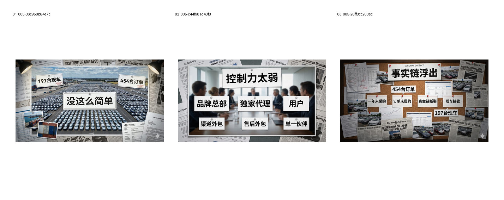

测试统一 Evidence Board 是否能覆盖 Hook、事实链和 Core Thesis。
Evidence: references/text2pic/conversations/005-视频制作流程建议/IMAGE_MANIFEST.md § B4｜Prompt 4.0：统一 Evidence Board

1b857d78af5b885b…
59e41a9b0f218b0c…
cbd1a3e2877a7cd7…